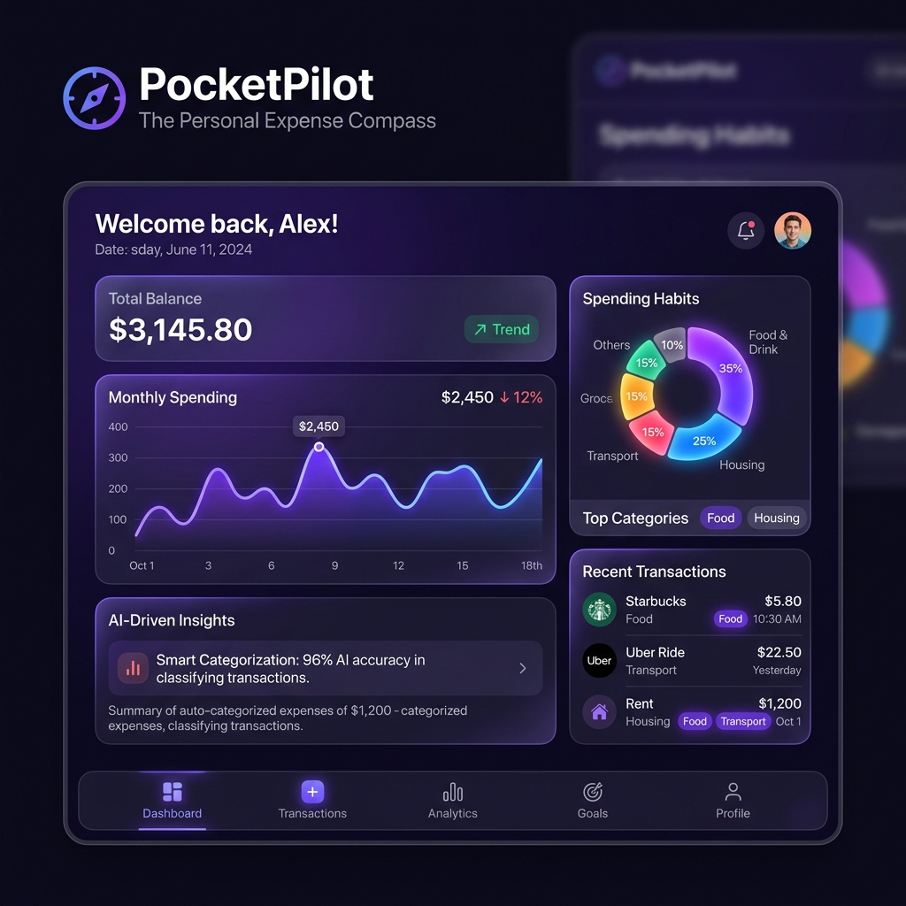

Java
Web App
Machine Learning
PocketPilot: The Personal Expense Compass
Core Developer
A responsive web-based financial tracking application incorporating machine learning models for transaction classification and spending predictions.